4. QmixV Plugin
4.1. Introduction to QmixV Plugin
The QmixV plugin is used to control the QmixV valve modules or to control valve devices that are part of other devices (i.e. valves mounted on Nemesys syringe pumps).
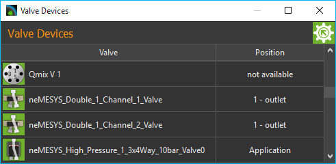
4.2. Valve Device List
The plugin mainly consists of the valve device list (see Figure above), which is displayed as a separate view in the graphical user interface. You can move the window to another position in the graphic interface at any time by dragging and dropping the title bar, or you can move it out of the interface to become a separate window.
The valve device list shows you all the available Qmix valve devices in tabular form. The name of the module and the actual valve position status icon is shown in the left-hand table column, and the right-hand column shows the name of the current position of the valve.
4.2.1. Editing valve names
You can change the name of a valve at any time and, for example, assign a name suitable for your particular application. You change a name by the following steps:
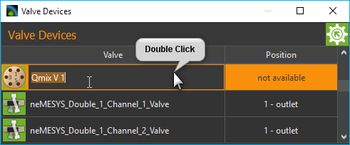
Double-click the table cell containing the name you want to change.
Enter the new name in the Editing window which now appears (see Figure above)
Complete your changes by pressing the Return key.
4.2.2. Switching valve position
You can also switch the valve position in the module list. For this purpose proceed as follows:
Double-click in the table cell showing the valve position.
Select the desired valve position in the selection box that now appears (see Figure below).
Confirm the selection by pressing Return key or click on another table cell to close the selection box.
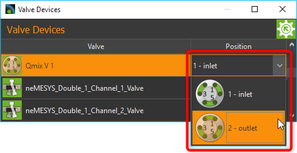
The valve is now switched into the new valve position.
4.2.3. Naming valve positions
You can give each valve position an individual name in the software, and so configure the names of the valve positions to suit your application. Perform the following steps to change the names of the valve positions.
Make a right mouse click in the line of the table of the valve for which you want to rename the positions.
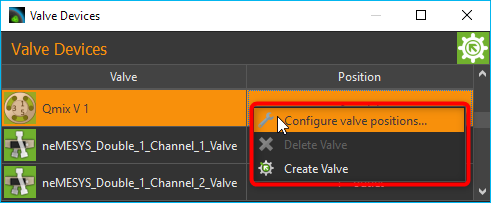
Select the Configure valve positions… menu item in the context menu, that is being displayed.
A configuration dialog opens (Figure below), which consists of a valve selection box ❶ and the list of valve positions ❷.
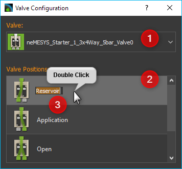
Double click the line in the table containing the valve position you want to name.
An Editing window ❸ opens in the table cell, in which you can enter the new name of the valve position.
Confirm your entry by pressing the Return key.
You can close the configuration dialog when you have named all the valve positions.
From now on, the valve positions will always be shown with the new names in all areas of the software.
4.3. Creating Valves
You can control CETONI valves via one or more digital outputs. If you have connected your valve to the corresponding digital outputs, you must configure it in the software.
The first step is to open the I/O channels window and manually switch the digital outputs to check that the valve is correctly connected and switching.
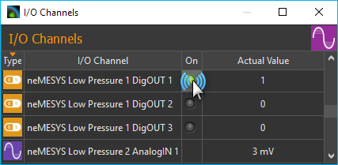
Click on the LED in the column On at the corresponding channel to switch the digital channels off and on again. Check whether the valve is switched when switching the digital output. If the valve is not switched, it is either connected incorrectly or you are switching the wrong output. If the valve switches, you can continue creating the valve in the software.
To do this, right-click in the list of valves and then select from the context menu.
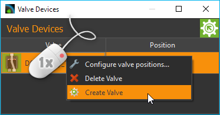
The dialog for creating and configuring a valve is now displayed.
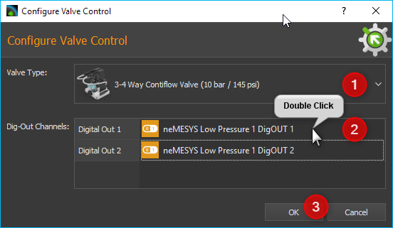
In the window, first select the type of valve you have connected in the field Valve Type ❶. Then you must configure the digital outputs for the valve in the Dig-Out Channels table. Depending on the valve type, these can be one or more outputs. To configure an output, double-click in the table cell ❷ for this channel and then select the corresponding digital output from the list. The OK button ❸ is only activated when the corresponding digital output channel has been configured for each switching input of the valve. You can then complete the configuration by clicking OK.
The newly created valve now appears in the list of valves. Valves
created with the Create Valve function get the prefix DO_ to
indicate that they are valves controlled by digital outputs.
Tip
Valves created with the Create Valve
function can be identified by the prefix DO_ in
the valve list.
4.4. Deleting Valves
Valves that you have created dynamically in the software, e.g. with the Create Valve function (see previous section), can be deleted from the valve list via the context menu. To do this, right-click on the line of the valve you want to delete and then select the menu item.
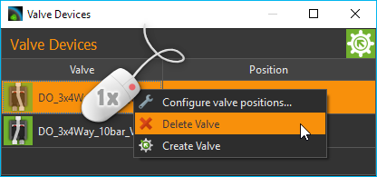
Important
Valves created and configured with the Device Configurator, or that are part of other devices, cannot be deleted with Delete Valve menu item.
4.5. Valve Script Functions
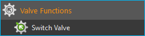
The Qmix valve plugin contains a script function for switching the Qmix valves from a script.
4.5.1. Switch Valve
{kind=link}
You use this function to switch the valve position. In the configuration area of this function, you can select the valve device ❶, and the target position ❷ to which the valve is to be switched. The preview image visualizes the selected target position ❸.
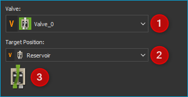
Both selection boxes support the use of variables. That means, in the device selection box ❶ you can use a variable that contains a valve device reference. In the target position selection box ❷ you can use a script variable that contains a target position index.
The following example shows a script, that creates two variables ❶. The
$ProcessValve variable stores the device reference to valve device
Valve_0. The $RefillPosition variable stores the valve target
position for syringe refill.
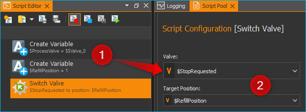
These variables are then used in the Switch Valve script ❷ for the Valve and Target Position definition.